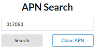
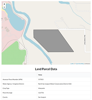
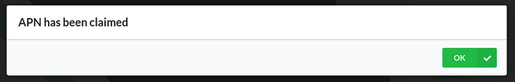
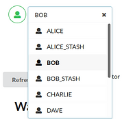
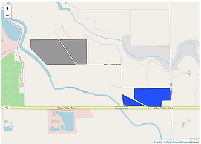
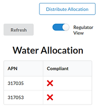
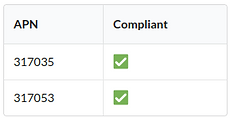
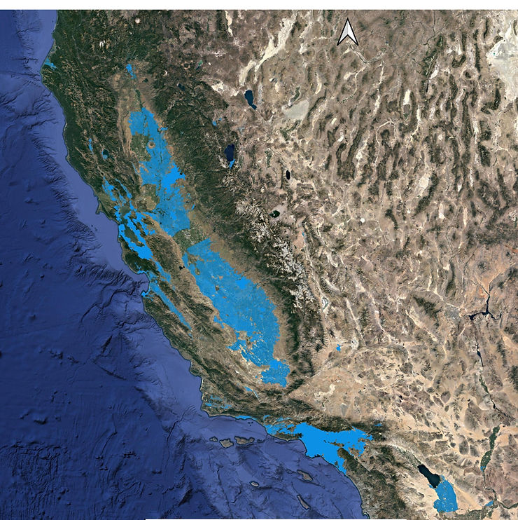
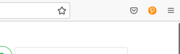
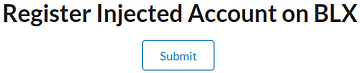

October 18th, 2021
Welcome to the Basin Logix Platform 0.0.1 beta release tutorial.
In this tutorial we will be demonstrating:
- Searching for, inspecting and registering agricultural parcels on the network
- Distributing groundwater allocations to all registered parcels on the network
- Trading groundwater allocations between parcels on the network.
- Monitoring the compliance of agricultural parcels on the network.
- Taking ownership of your APNs on Basin Logix.
We have detailed how to create user accounts and take ownership of your APNs on Basin Logix in this tutorial.
Search for your parcel on the network: 
Enter your APN into the APN Search (example: 317053) and click search.
Now review the details of the agricultural parcels associated with APN 317053. Check that the GSA, county, crop type and acreage are all accurate with the information you have about your parcels. 
If everything looks as it should, claim the APN by clicking the Claim APN button. 
Click the Refresh button to show your claimed parcel(s) which now appear in blue and see their water allocations in the Water Allocation table.

Change accounts to Bob and repeat the above steps with APN: 317035
Now Bob’s parcels appear in blue (because he is the selected account) and Alice’s Parcels in gray. Additionally only Bob’s parcels are displayed in the Water Allocation table.

Switch on Regulator View and notice that the Water Allocation table now shows all APNs, but shows them as out of compliance. For example purposes of this beta version, APNs are out of compliance when their Water Allocations are below 10 ACFT.

Click the Distribute Allocation button to allocate 100 ACFT to all registered APNs on the the network. Wait 5 seconds and click the Refresh button to view the APN’s new compliance status.

Now that both parcels have a Water Allocation figure out how move some ACFT from one to the other by utilizing the Water Transfer function. (when in doubt click the Refresh button)

Our database contains agricultural, water resource management and property data for APNs in 44 counties in California. The database is being continuously updated with more attributes and data types.
Great Job!
Now that you know how to register APNs, distribute allocations, and move allocations around, lets re-register your APNs on the network under your own account.
Install the Polkadot-js extension (A very simple browser extension that enables decentralized applications to utilize accounts that it manages and creates.)
On Chrome, install via Chrome web store
On Firefox, install via Firefox add-ons

After installing, click on the little orange P icon in your browser. Follow the instructions to create an account. Write down your seedphrase and password. The Basin Logix team cannot retrieve either of these if you lose them.
Refresh platform.basinlogix.com and allow the Polkadot-js extension access to the Basin Logix platform by approving access.

With your account selected located the Register Injected Account on BLX function near the bottom of the page and click Submit.
As you did before, search for and claim your APNs.
They will now be attributed to the account you just created!
Registering your APNs under your own account will:
- Help guide our efforts toward launching the main network for your basin.
- Let your neighbors know that you want shared water resource governance that is easy to understand, has no central authority and respects your privacy.
- Let your regulators know that you support collective efforts towards sustainability and that you want to control your resources how you choose to.